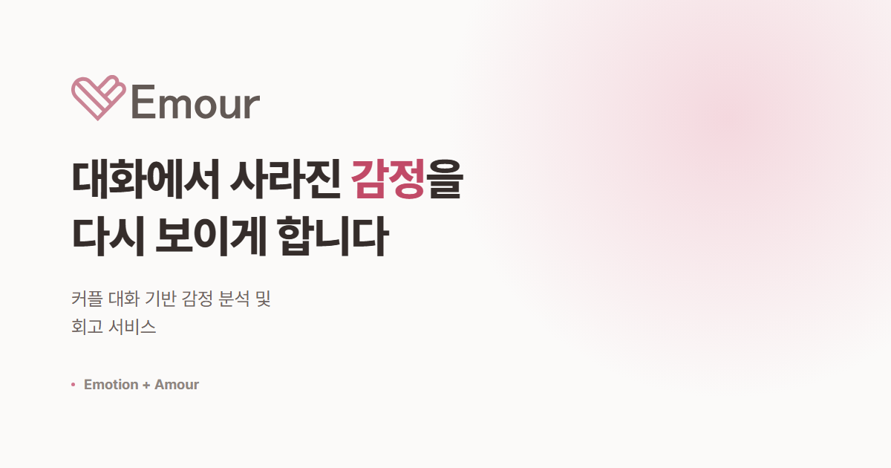
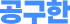

Frontend · 디자인 가이드2026.09 – 10 · 6인 SSAFY 자율 프로젝트 · v1.0.0 출시
하루 한 장의 사진을 캔버스 삼아 함께 꾸미는 공유 다이어리
React Native 편집기의 기능과 성능 개선, 그리고 팀 전체가 따르는 디자인 가이드 작성을 담당했습니다.
담당레이어·페이지 다중 선택과 함께 옮기기, 지우개 영역 지우기, 올가미 선택 표시, 마스킹테이프 색 쌍 저장, 텍스트 하이퍼링크·격자 가이드·한국어 글꼴, GIF·PDF 내보내기 화질과 속도, iPad 배포 설정, 디자인 가이드(BI·CI·인앱 UI)와 2026 디자인 트렌드 검토 문서.
문제
펜, 지우개, 올가미, 테이프, 텍스트까지 도구가 늘수록 화면마다 색과 굵기, 선택 표현이 달라졌습니다.
결정
BI·CI·인앱 UI를 한 문서로 묶은 디자인 가이드를 쓰고, 토큰 외의 값은 사용하지 않도록 규칙을 세웠습니다. 새 화면은 이 문서 하나만 보고 만들 수 있게 했습니다.
결과
iPad를 포함해 v1.0.0을 출시했습니다. 다이어리·페이지·요소 ID를 UUID로 전환해 기기 간 충돌을 제거했고, 내보내기 화질을 올리면서 GIF·PDF 생성 속도도 개선했습니다.
로그인, 대시보드, 채팅방 화면을 구현하고 열다섯 화면의 디자인 기준을 정했습니다. 소개 사이트는 단독으로 제작했습니다.
담당회원가입·로그인·대시보드·채팅방 화면, 디자인 토큰 체계와 병합 정리, 77개 엔드포인트 연결, 소개 사이트 6페이지 기획·디자인·구현.
문제
여섯 명이 각자 만든 화면이 전환할 때마다 다른 서비스처럼 보였고, 실시간 채팅은 과거 메시지를 불러올 때 스크롤 위치가 흔들리고 메시지가 중복 저장됐습니다.
결정
담당 기능을 다른 팀원에게 넘기고 디자인 토큰 설계와 병합 정리를 맡았습니다. 브랜드색 위 흰 글씨의 명도 대비 2.7:1을 버튼 색만 분리해 4.4:1로 올렸습니다. 과거 메시지 로드 시 높이 차만큼 스크롤을 보정하고, 클라이언트 UUID를 중복 방지 키로 쓰도록 백엔드와 합의했습니다.
결과
77개 엔드포인트를 일정 안에 연결했고, 2일간 291명이 참여한 베타 테스트에서 채팅 편의성 4.56점을 받았습니다. 소개 사이트는 문구와 수치를 데이터 파일로 분리해 배포 후 수정을 비개발 팀원이 직접 했습니다.
한계
감정 분석을 서버가 일괄 처리해 메시지 표시 후 감정 태그가 늦게 붙습니다. 그 사이의 화면 처리는 해결하지 못했습니다.
useInfiniteScroll.js — 과거 메시지 로드 후 스크롤 보정
// 로드 직전 높이를 기억해 두고, 로드가 끝나면 늘어난 만큼만 스크롤을 내린다.const restoreScrollPosition = useCallback(() => {
const container = containerRef.current;
if (!container) return;
const diff = container.scrollHeight - prevScrollHeightRef.current;
if (diff > 0) container.scrollTop += diff;
}, []);
IntersectionObserver로 맨 위 감시 요소가 보이면 불러오고, 그 직전에 scrollHeight를 저장합니다. 읽던 메시지가 제자리에 남습니다.

소개 사이트 공유 카드
StackReact 19 · Vite · STOMP / SockJS · Design Tokens · Spring Boot · Redis

Frontend2026.08 – 09 · 6인 SSAFY 특화 프로젝트
카드·카카오페이·코인 결제와 에스크로를 갖춘 공동구매 플랫폼
HTML 목업 19개 화면을 React와 TypeScript로 이관하고, 목 서버를 제거한 뒤 실제 백엔드와 연동하는 일을 담당했습니다.
담당구매 흐름(목록·상세·배송지·결제·완료), 거래관리(구매확정·반품·이의제기), 판매자센터(상품·공동구매·주문·반품·정산), 결제 슬롯, API 계약 검사, 미구현 API 플래그, 목업 CSS의 토큰 이관.
문제
서버 응답이 명세와 달라도 타입 검사는 통과하고 화면만 비어 있었습니다. 공동구매 id가 문자열이 아닌 숫자로 오거나 코인 결제 상태의 키 이름이 다른 일이 실제로 여러 번 있었습니다.
결정
개발 환경에서만 응답을 zod 스키마와 대조해 어긋난 필드를 콘솔에 보고하되 화면은 막지 않도록 했고, 스키마 이름만 전달해 프로덕션 번들에 zod가 포함되지 않게 했습니다. 미구현 API는 가짜 데이터 대신 '준비 중'으로 안내하고 플래그 하나로 활성화되게 했습니다.
결과
결제, 배송, 반품, 판매자센터까지 명세서의 엔드포인트 대부분을 연동했습니다. 결제 수단을 선택하면 5분간 자리를 확보하는 슬롯을 두었고, 카드번호는 승인 요청에만 사용하고 상태나 로그에 남기지 않았습니다.
한계
토큰 재발급 API가 없어 액세스 토큰이 만료되는 30분마다 다시 로그인해야 합니다. 관리자 화면은 구현하지 못했습니다.
contract.ts — 개발 중에만 서버 응답을 스키마와 대조
export function checkContract(name: SchemaName | undefined, data: unknown, where: string): void {
if (!import.meta.env.DEV || name === undefined) returnvoid report(name, data, where)
}
async function report(name: SchemaName, data: unknown, where: string) {
registry ??= import('./schemas').then((m) => m.schemas) // zod는 DEV 분기 안에서만 적재const result = (await registry)[name].safeParse(data)
if (result.success) return
console.error([`[API 계약 불일치] ${where}`, ...issues(result), ` 서버가 보낸 키: ${keysOf(data)}`].join('\n'))
}
스키마 객체가 아니라 이름을 받는 이유는 번들 크기입니다. 객체를 받으면 호출부가 zod를 정적으로 끌고 와 프로덕션에도 실립니다.
PM · AI 파이프라인 · Frontend2026.05 – 06 · 2인 SSAFY 관통 프로젝트
동서양 설화로 창작 모티프와 플롯 초안을 추천하는 서비스
2인 팀의 PM으로 AI 파이프라인과 프론트엔드를 담당했고, 모델이 틀릴 때 서비스가 어떻게 동작할지를 설계했습니다.
담당설화 데이터 수집(크롤링, 아카이브 기관 이용 허가)과 라벨링·임베딩, 추천 파이프라인 설계와 구현, DB 설계, 화면과 디자인.
문제
LLM 단일 호출은 같은 질문에 다른 답을 냈고, 존재하지 않는 모티프 코드를 생성했습니다. 응답에는 9초에서 12초가 걸렸습니다.
결정
범주 추론, 후보 500개, 10개 선별, 임베딩 유사도 계산의 단계로 나누고 화면에는 현재 단계를 표시했습니다. 결과에는 모티프 코드와 원문, 유사도를 함께 보여 근거를 확인할 수 있게 했습니다.
결과
반환값을 DB 값과 교집합만 남겨 환각을 걸러냈고, 외부 API가 실패해도 유사 설화 목록은 제공됩니다.
한계
응답 시간 자체는 줄이지 못했습니다. 대기 상태를 설명하는 쪽을 택했습니다.
services.py — LLM 반환값을 DB에 있는 값과만 교집합
raw = call_gms_llm(system_prompt, user_prompt, max_tokens=512)
try:
result = json.loads(raw.strip().strip("```").replace("json", "", 1).strip())
if isinstance(result, list):
valid = set(get_all_divisions()) # DB에 실제 존재하는 값만return [d for d in result if d in valid] # LLM이 살짝 바꿔도 방어except (json.JSONDecodeError, ValueError):
passreturn []
빈 목록이 돌아오면 다음 단계는 범주 필터 없이 임베딩 검색만으로 진행합니다. 한 단계가 실패해도 결과가 비지 않습니다.